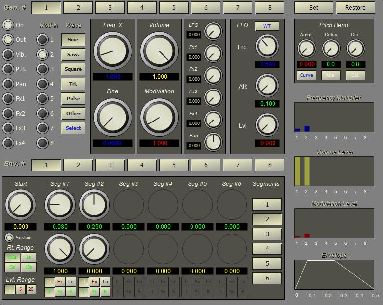

The MatrixSynth instrument combines eight oscillators and eight envelope generators in a variable configuration, along with LFO, pitch bend, dynamic panning and processing effects.

The MatrixSynth instrument editor is shown below.
Because of the complexity of this instrument, it is helpful to draw a patch diagram before attempting to configure the instrument. The eight tone generators can be configured for FM synthesis, additive synthesis, or a combination. The MatrixSynth instrument can also produce an "ensemble" sound, with separate sections of the patch used to produce different sounds, doublings, etc.
The editor configures one tone generator (oscillator and envelope generator) at a time. The oscillator is selected using the buttons at the top of the form. The envelope for the oscillator is selected using the buttons between the oscillator and envelope areas. An envelope can be shared by multiple oscillators. A single LFO and pitch-bend configuration is shared by all tone generators, but the amount of each can be individually applied and scaled to each tone generator.
The switches at the left side enable routing the oscillator signal.
Typically, the effects send and pan values are set for an instrument at the mixer. The MatrixSynth can optionally bypass the mixer settings on a per-oscillator basis. This allows direct control of effects and pan by setting the appropriate instrument parameters during performance.
The next set of switches controls FM input to the oscillator. If a switch is set on, the output of the respective oscillator is applied to the current oscillator's frequency. For example, a simple two oscillator FM instrument is created by enabling GEN 1 and GEN 2, setting GEN 1 as an audio output and selecting GEN2 in the Mod-in settings for GEN 1.
The switches labeled with waveforms select the oscillator waveform.
The Freq X and Fine controls set the oscillator multiplier. The note frequency is multiplied by the sum of the Freq X and Fine controls. The Volume value sets the level for audio output and is only effective if the OUT lamp is switched on. The Modulation value sets the level for modulation output and is only effective if the oscillator is selected as an input to another oscillator.
The LFO value scales the output of the LFO for this oscillator. The FxN values determine how much of the oscillator is applied to the respective mixer effects input. The Pan value determines the panning for this oscillator.
Since each of the eight oscillators can be designated a signal output, a modulator, or both, separate parameters determine the amplitude for signal output and modulation output. Oscillator signals are routed using a set of flags on each oscillator. The flags are defined as follows. (bit 0 indicates LSB)
Bit 0 - If set, the oscillator is on and output of the oscillator will be processed.
If clear, the oscillator is skipped during sample generation.
Bit 1 - If set, the oscillator output is multiplied by the envelope, scaled by the volume level, and added
to the audio signal output.
Bit 2 - If set, the LFO is applied to the oscillator frequency (vibrato).
Bit 3 - If set, the Pitch Bend function is applied to the oscillator.
Bit 4 - If set, the output of the oscillator is sent to effects unit 1
Bit 5 - If set, the output of the oscillator is sent to effects unit 2
Bit 6 - If set, the output of the oscillator is sent to effects unit 3
Bit 7 - If set, the output of the oscillator is sent to effects unit 4
Bit 11 - If set, LFO is applied to the audio amplitude (tremolo).
Bit 12 - If set, internal panning is applied to the audio output.
Bit 16-23 - These bits select modulator inputs. When set, a bit indicates that the
output of the associated oscillator (0-7) should be applied to the frequency modulation
input of the oscillator.
Bit 24-31 - Currently unused; reserved for additional generators, up to 16 total.
This setup allows the MatrixSynth instrument to act as an eight operator FM instrument, an eight tone additive synthesis instrument, or any combination of the two.
The eight envelope generators each have a variable number of segments. Any envelope generator can be applied to any oscillator allowing multiple oscillators to be controlled with a single envelope generator.
Each oscillator that is added as a signal output can be independently panned left or right. When internal panning is turned on, the output bypasses normal mixer panning and allows the spatial position of the sound to be dynamically controlled.
Four effects outputs are available for the instrument. Any amount of each output oscillator can be sent to one of these four outputs allowing for dynamic control over effects such as reverb and chorus. Each effects output corresponds to an effects unit on the Mixer.
The XML format and parameter table for the MatrixSynth instrument are shown below. Each signal generator and envelope generator in the matrix is given a separate node in the tree. The gen node contains attributes for the oscillators and associated values. The env node contains attributes and child nodes for one envelope generator. Both gen and env may be duplicated up to eight times. The envelope segment nodes are duplicated four times with the segment number varying from 0 to 3 representing attack, decay 1, decay 2, release. The level indicates the value at the end of the segment.
The out attribute contains the generator output matrix flags. This is encoded as a text string of 1s and 0s from LSB to MSB going left-to-right. See the description of the bits 0-15 given above.
The mod attribute contains the modulator input matrix flags (bits 16-31 of the flags). This is encoded as a text string of 1s and 0s from LSB to MSB going left-to-right. Modulator 0 is the first bit, modulator 1 the second, bit, etc. For example, a value of 0x13 would be "11001000" and would indicate generators 0, 1 and 4 are applied to the oscillator as modulation inputs.
Because of the large number of parameters we use a system of IDs similar to that shown for the AddSynth instrument to represent parameters. The upper byte of the parameter ID contains the generator number while the lower byte contains the value index. For an envelope, 3 bits of the value index are used to indicate the envelope parameter and 5 bits to indicate the segment number. Since we have 8 oscillators and envelope generators, 3 bits of the upper byte are used to indicate the generator number. The next 2 bits are used to indicate the type, oscillator or envelope. A value of 1 for the type indicates an oscillator, while a value of 2 indicates an envelope. A value of 0 for the upper byte indicates a value that applies to either multiple generators or one of the reserved event IDs.
[ON(5)][val(8)] or [EN(5)][SN(5)][val(3)] ON = (oscillator * 256) + 2048 EN = (envelope * 256) + 4096 SN = segment * 8
In the following table, ID names of the form gn represent the letter 'g' followed by an integer in the range 0-7 and refer to a generator number. ID names of the form en and ensn refer to envelopes and envelope segment numbers respectively. For example, to set the frequency for generator 3, use g3.frq and use e0s2.rt to set the rate for segment 2 of envelope 0. The letter 'g' can be extened to 'gen' or even 'generator' if desired since the code only looks at the first letter and then skips all letters up to the next digit. The same is true for envelope and segments. For example, envelope0segment2.rate is parsed the same as e0s2.rt. In addition, the 'dot' before the parameter name is optional, i.e., e0s2rt is allowed as well.
|
Parameter |
Tag |
Attribute |
Name
|
Use |
|
5 |
mat |
frq |
frq |
Base frequency |
|
6 |
|
vol |
vol |
Overall volume |
|
16 |
lfo |
frq |
lfofrq |
LFO Frequency |
|
17 |
|
wt |
lfowt |
LFO wavetable |
|
18 |
|
rt |
lfoatk |
LFO attack rate |
|
19 |
|
amp |
lfoamp |
LFO amplitude |
|
20 |
|
r1 |
pbr1 |
Rate between a1 and a2 |
|
21 |
|
r2 |
pbr2 |
Rate between a2 and a3 |
|
22 |
|
a1 |
pba1 |
Pitch bend start amount |
|
23 |
|
a2 |
pba2 |
Pitch bend middle amount |
|
24 |
|
a3 |
pba3 |
Pitch bend end amount |
|
25 |
|
pbamp |
pbamp |
Pitch bend WT amount |
|
26 |
|
wt |
pbwt |
Pitch bend wavetable |
|
27 |
|
* |
pbfrq |
Pitch bend WT rate (only settable during performance) |
|
|
gen |
gn |
gn |
Oscillator number |
|
ON+0 |
|
out |
gn.on |
Output flags |
|
ON+1 |
|
mod |
gn.mod |
Mod in flags |
|
ON+2 |
|
wt |
gn.wt |
Wave table |
|
ON+3 |
|
mul |
gn.mul |
Frequency multiplier |
|
ON+4 |
|
mnx |
gn.mnx |
Modulation index |
|
ON+5 |
|
vol |
gn.vol |
Audio signal volume |
|
ON+6 |
|
eg |
gn.eg |
Envelope generator index |
|
ON+7 |
|
fx1 |
gn.fx1 |
Effects 1 out level |
|
ON+8 |
|
fx2 |
gn.fx2 |
Effects 2 out level |
|
ON+9 |
|
fx3 |
gn.fx3 |
Effects 3 out level |
|
ON+10 |
|
fx4 |
gn.fx4 |
Effects 4 out level |
|
ON+11 |
|
lfo |
gn.lfo |
LFO in level |
|
ON+12 |
|
|
gn.vib |
LFO vibrato on/off |
|
ON+13 |
|
|
gn.trm |
LFO tremolo on/off |
|
ON+14 |
|
pan |
gn.pan |
Pan setting |
|
ON+15 |
|
|
gn.pon |
Panning on/off |
|
ON+16 |
|
|
gn.on |
Oscillator on/off |
|
ON+17 |
|
|
gn.sig |
Audio signal out on/off |
|
|
env |
en |
en |
Envelope number |
|
EN+6 |
|
segs |
* |
Number of segments |
|
EN+0 |
|
st |
en.st |
Envelope start level |
|
EN+1 |
|
sus |
en.sus |
Sustain on/off |
|
|
seg |
sn |
ensn |
Envelope segment number |
|
EN+SN+2 |
|
rt |
ensn.rt |
Envelope segment rate |
|
EN+SN+3 |
|
lvl |
ensn.lvl |
Envelope segment level |
|
EN+SN+4 |
|
ty |
ensn.ty |
Envelope segment type |
|
EN+SN+5 |
|
fix |
ensn.fix |
Fixed duration flag |
<instr type="MatrixSynth">
<mat frq="" vol="" />
<gen gn="" out="" mod="" wt="" mul="" mnx=""
vol="" eg="" lfo="" pan="" pb=""
fx1="" fx2="" fx3="" fx4="" />
<env en="" segs="" st="" sus="">
<seg sn="" rt="" lvl="" ty="" fix="" />
</env>
<lfo frq="" wt="" rt="" amp="" />
</instr>